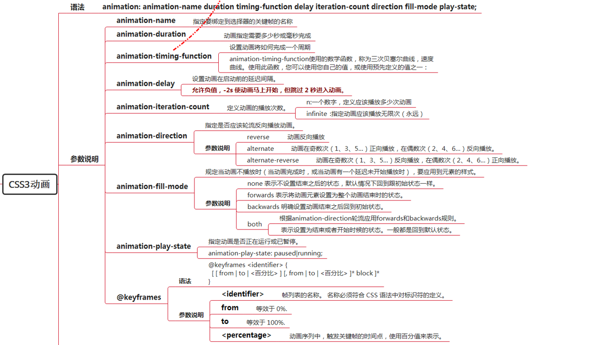

在了解用法之前先来了解一下支持性

基本上主流浏览器都支持了，IE也10往上也都支持了。
@keyframes
@keyframes: name {
keyframes selector {
keyframes declaration
}
}
了解animation之前为什么要介绍@keyframes呢，因为两者之间是配合使用的，也就是animation-name，具体怎么配合使用下面会有详细demo。
语法
animation: [＜animation-name＞ || ＜animation-duration＞ || ＜animation-timing-function＞ || ＜animation-delay＞ || ＜animation-iteration-count＞ || ＜animation-direction＞ || ＜animation-fill-mode＞] [, [＜animation-name＞ || ＜animation-duration＞ || ＜animation-timing-function＞ || ＜animation-delay＞ || ＜animation-iteration-count＞ || ＜animation-direction＞ || ＜animation-fill-mode＞] ];
animation-name
动画的名称。
animation-duration
定义动画完成一次迭代所需的时间长度。
animation-timing-function
指定动画在关键帧之间的进展情况。
animation-delay
定义动画何时开始。
animation-iteration-count
指定动画迭代的次数。
animation-direction
确定动画在替代迭代中是否应该反向播放。
animation-fill-mode
允许您定义执行时间之外的动画所应用的值。
另外，所有CSS属性还接受以下CSS范围的关键字值作为其属性值的唯一组件：
initial
表示指定为属性初始值的值。
inherit
表示元素父级上的属性的计算值。
unset
该值充当inherit或者initial，取决于属性是否被继承。换句话说，如果它们是可继承的，它将把所有的属性设置为它们的父值，或者如果它们是不可继承的，则将它们设置为初始值
例如这个例子：animation: bounce 1s ease-in 2s 6 alternate none;
解释下：这样写也就是说把animation连起来写了，分开写的话是这样：
animation-name: bounce;
animation-duration: 1s;
animation-timing-function: ease-in;
animation-delay: 2s;
animation-iteration-count: 6;
animation-direction: alternate;
animation-fill-mode: none;
详细用法如下图所示：

使用animation写的轮播图轮播demo